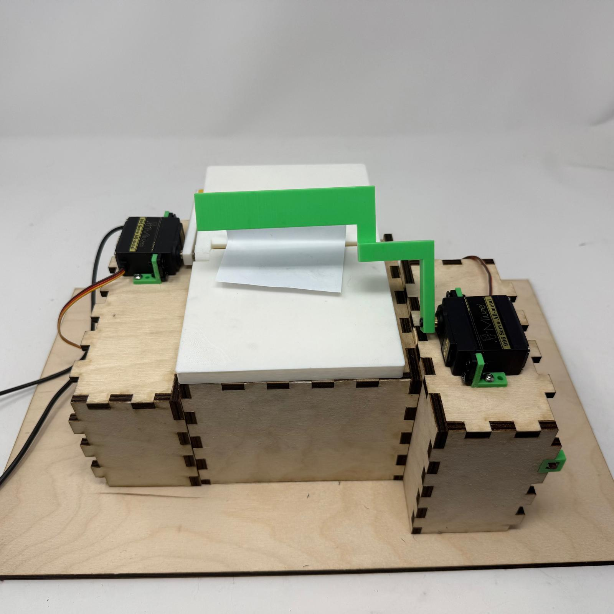
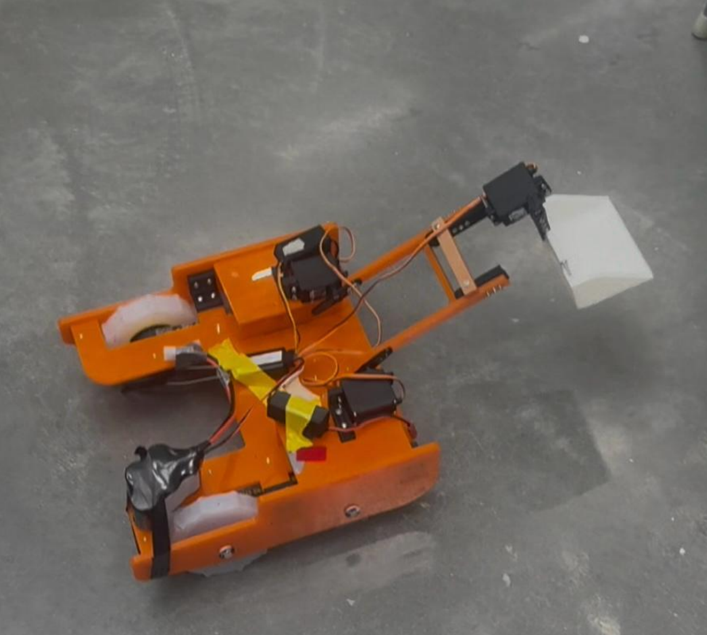
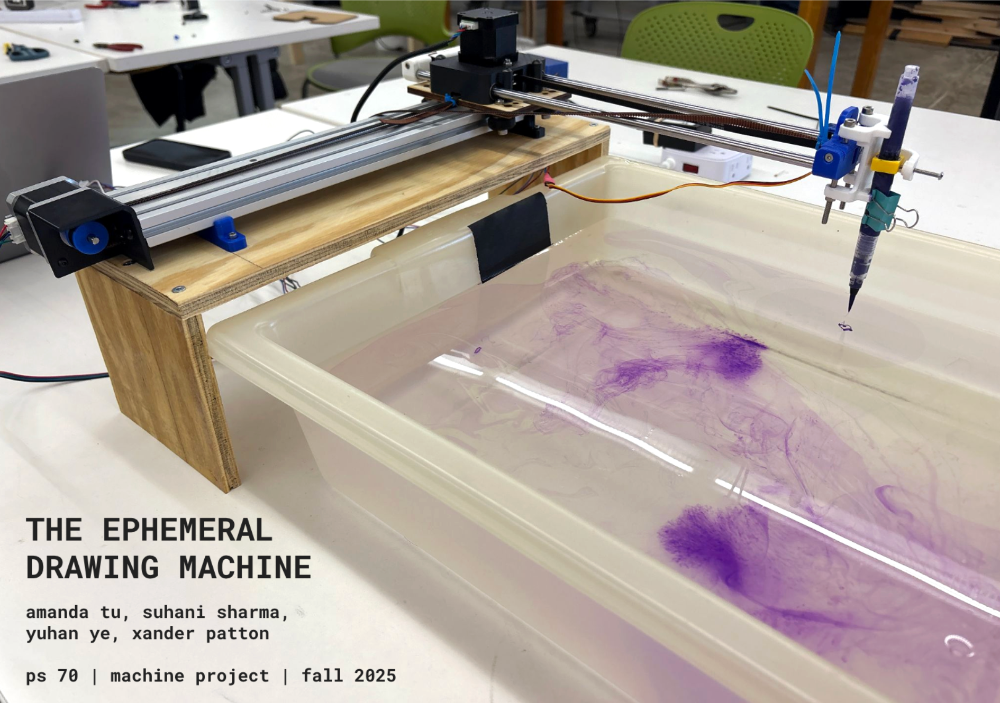
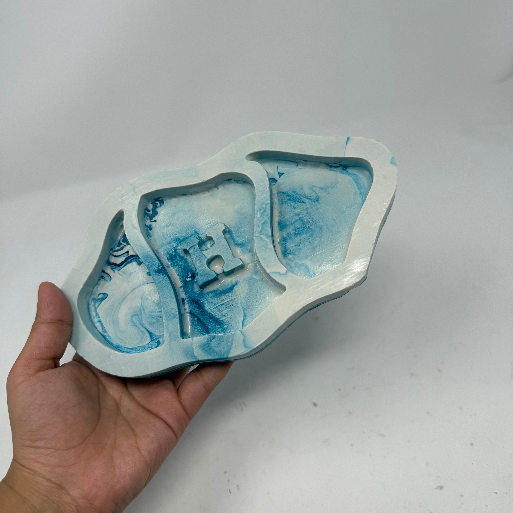
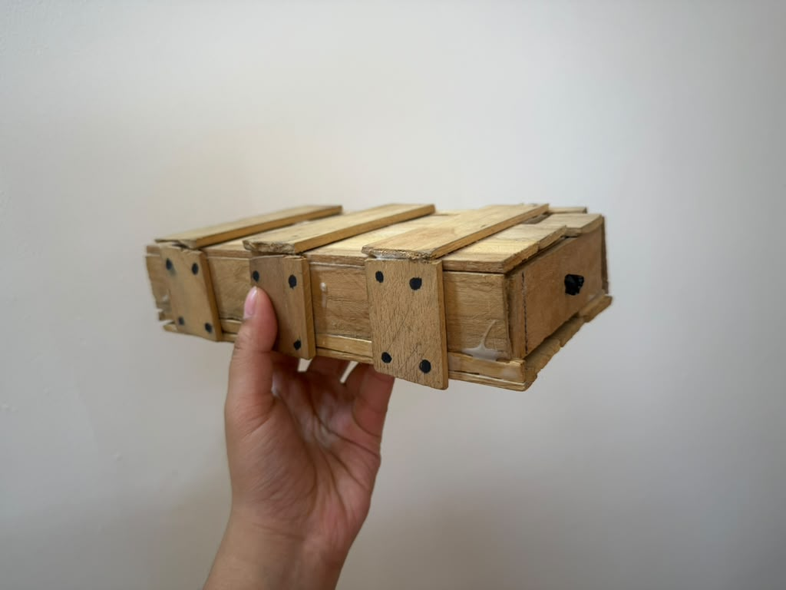

projects / fabrication
Fabrication
A collection of hands-on projects involving mechanisms, electronics, CNC milling, circuits, robotics, and physical prototyping.

Automated Origami Folding Machine
A mechanical-electronic system that automates part of the origami folding process using servos, hinges, and custom-built structures.

Competition Robot Design
My ES 51 final project: a competition robot built through mechanical design, fabrication, testing, iteration, and team-based engineering.

Drawing Machine
A collaborative drawing machine that dispenses ink onto water to create temporary shapes and marbled patterns.

CNC Milling
Wooden trays made through Fusion 360 design, ShopBot milling, sanding, shellac finishing, vacuum forming, and casting.

Sound-Responsive Circuit
A microphone, buzzer, microcontroller, and LAN web server used to respond to room noise with different notes and songs.

Kinetic Sculpture
A motorized moving sign mechanism later upgraded with an L298N motor driver, potentiometer, and PWM speed control.

Wooden Mystery Box
A wooden puzzle box I made around age ten using a saw, wood glue, trial and error, and a tutorial from The King of Random YouTube channel.